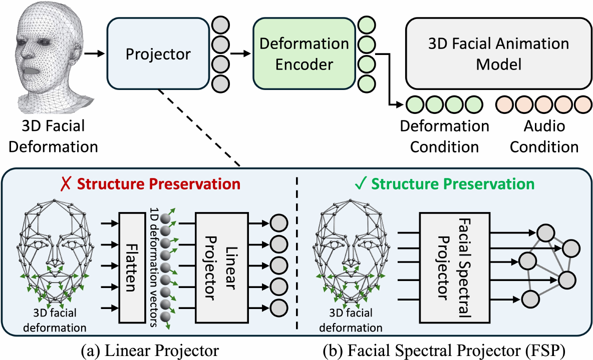
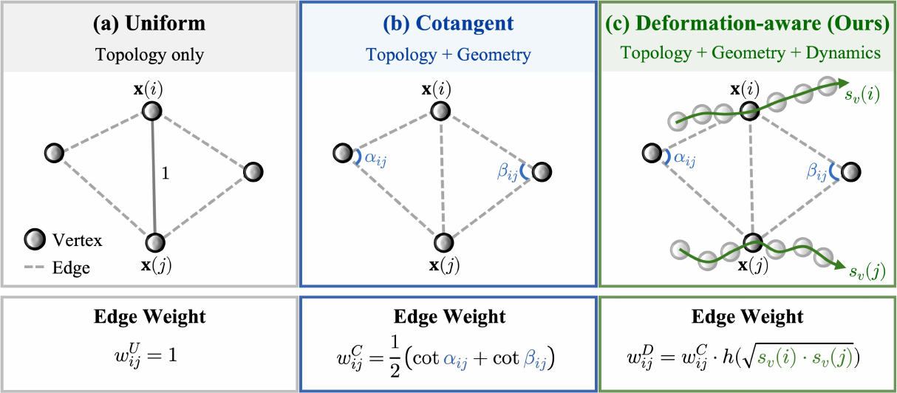
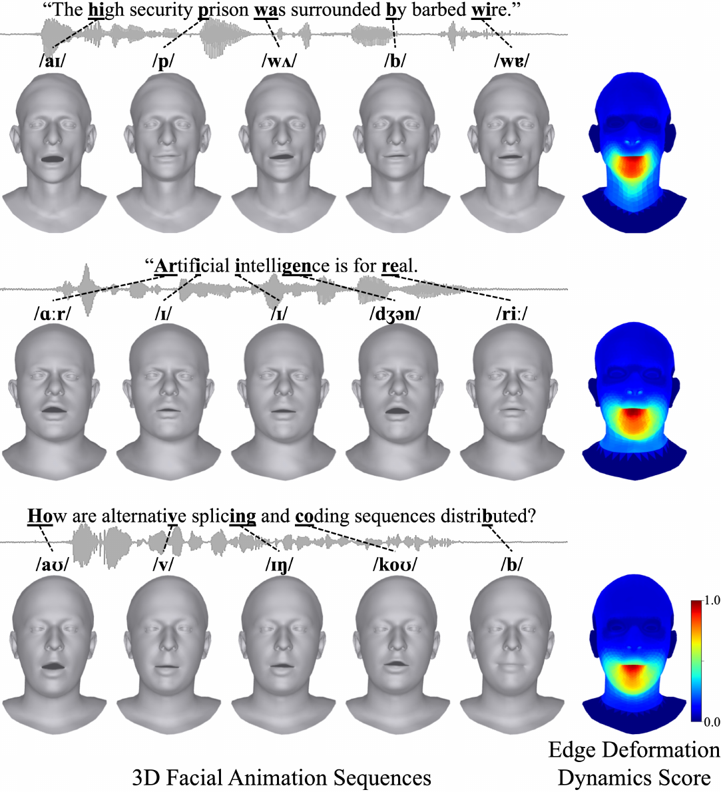
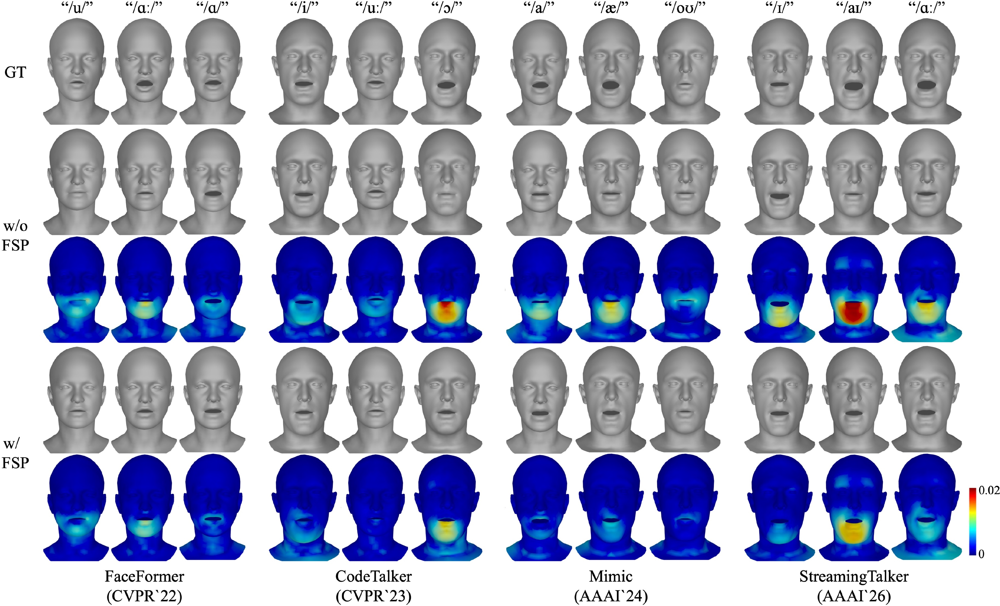
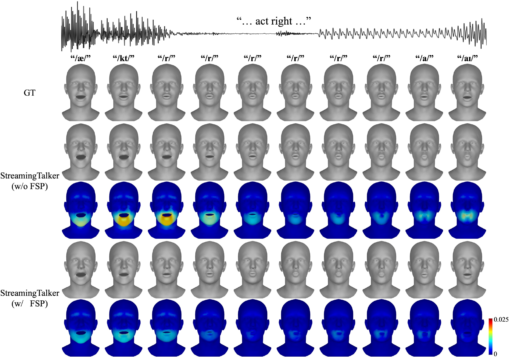
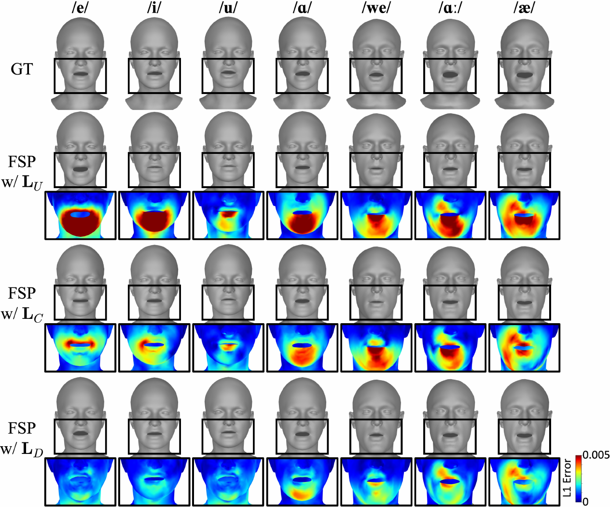
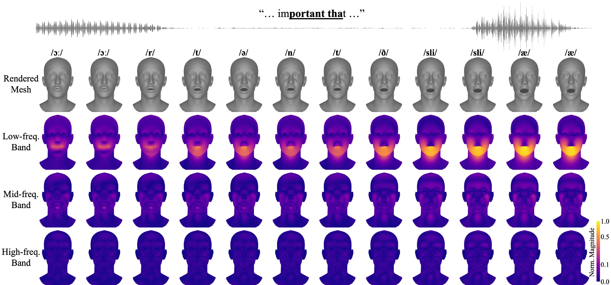
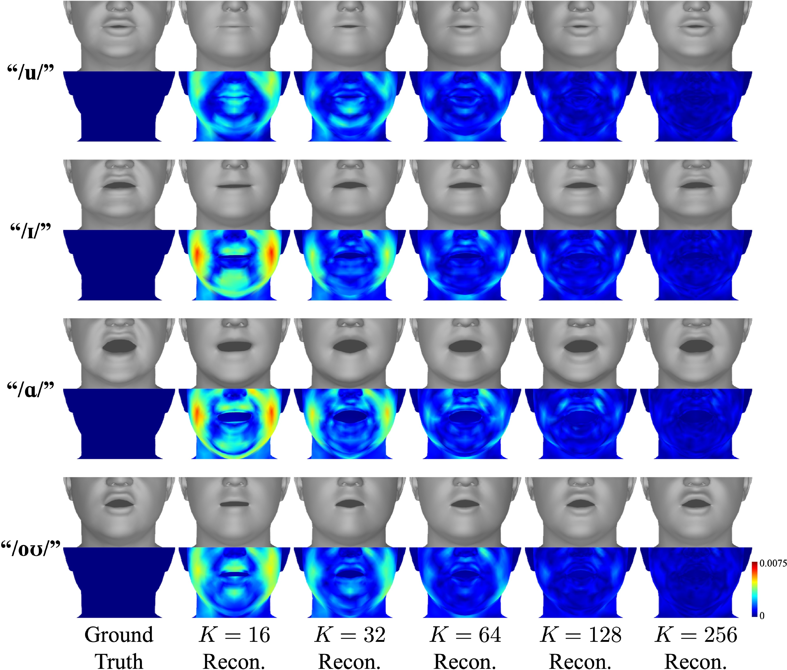
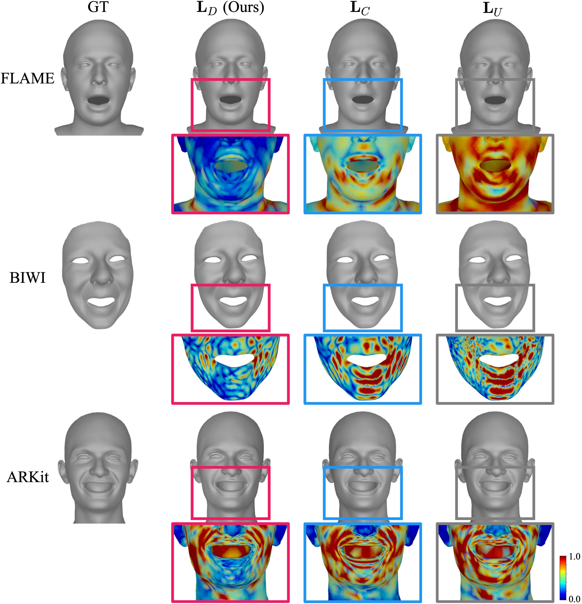
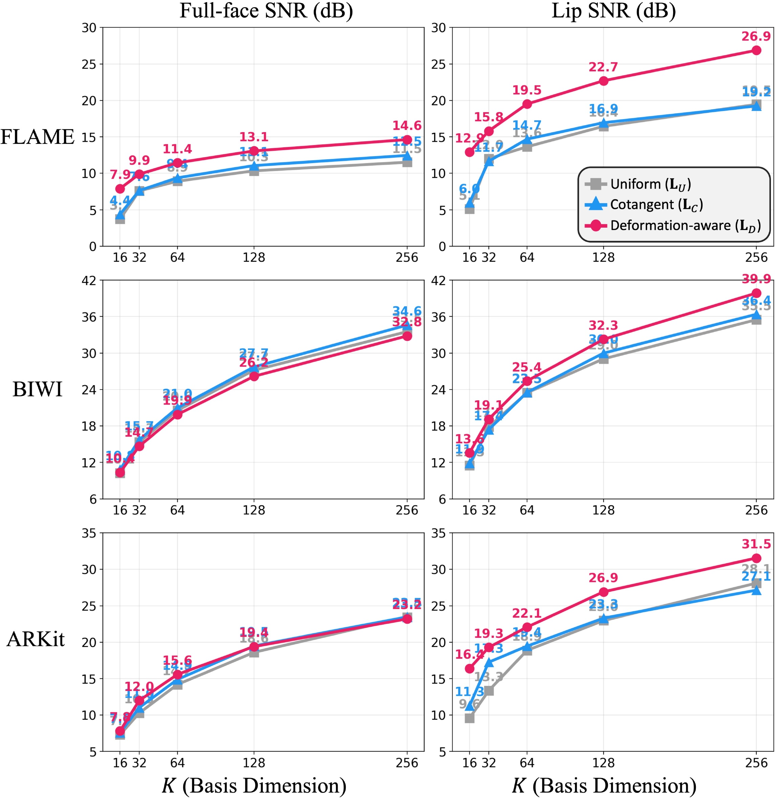

Despite remarkable advances in temporal modeling, speech-driven 3D facial animation still relies on a conventional vertex-space representation that flattens facial deformation into a one-dimensional vector. This representation ignores the geometric structure of facial deformation, limiting its ability to model coordinated speech articulation. We rethink facial deformation representation from a geometric perspective and propose Facial Spectral Projection (FSP), a plug-in module that replaces the conventional vertex-wise projection with a deformation-aware spectral representation. FSP constructs a spectral basis from a deformation-aware Laplacian that jointly captures facial geometry and speech-related deformation dynamics. Extensive experiments on three benchmark datasets and four representative backbones demonstrate consistent improvements in articulation-related reconstruction accuracy while reducing the learnable parameters of the projection layer by up to 91×. These results show that deformation-aware spectral representation provides a more effective foundation than conventional vertex-space projection for speech-driven 3D facial animation.

Instead of encoding facial deformation in the vertex domain, FSP represents it in a spectral domain constructed from a deformation-aware Laplacian that captures both the geometric structure of the facial mesh and the spatial distribution of speech-related facial motion.
1) Deformation Dynamics. We measure per-vertex temporal variation of the deformation field over training sequences — capturing the continuous opening, closing, and protrusion characteristic of articulation rather than mere displacement magnitude — and derive an edge deformation dynamics score that concentrates on the lips and jaw.
2) Deformation-Aware Laplacian. The edge scores modulate cotangent edge weights, yielding a Laplacian LD that encodes facial geometry and speech-related deformation patterns. Down-weighting high-deformation edges shifts articulatory deformation toward low-frequency spectral components, so the leading eigenvectors concentrate on articulation-active regions.
3) Facial Spectral Projection. Facial deformation is projected onto the first K eigenvectors of LD (a fixed, parameter-free projection), and the spectral coefficients are mapped to the feature dimension expected by the downstream network. Since only the initial projection layer is replaced, FSP plugs into existing models — FaceFormer, CodeTalker, Mimic, StreamingTalker — without architectural changes.

Laplacian edge weights. (a) Uniform LU: connectivity only. (b) Cotangent LC: local mesh geometry. (c) Ours LD: cotangent weights modulated by deformation dynamics, encoding both geometry and articulation.

Edge deformation dynamics. Higher scores (brighter) indicate stronger articulatory deformation dynamics — the scores concentrate on the lips, jaw, and perioral regions, exactly where speech articulation happens.
Replacing only the linear projection (LP) with FSP consistently improves articulation-related metrics across four speech-driven 3D facial animation backbones on VOCASET and BIWI — with the largest gains on Mimic (FVE 1.060→0.972) and StreamingTalker (LVE 0.389→0.291). Comparing the Laplacian variants used to construct the basis, the proposed deformation-aware LD achieves the best lip metrics (LVE, LDTW) on every backbone:
| Backbone | Laplacian | FVE (↓) | LVE (↓) | FDD (↓) | LDTW (↓) |
|---|---|---|---|---|---|
| ×10-3 | ×10-4 | ×10-8 | ×10-3 | ||
| FaceFormer | LU | 0.799 | 0.308 | 0.131 | 0.180 |
| LC | 0.792 | 0.326 | 0.154 | 0.183 | |
| LD (Ours) | 0.821 | 0.303 | 0.132 | 0.177 | |
| CodeTalker | LU | 0.877 | 0.397 | 0.175 | 0.213 |
| LC | 0.844 | 0.356 | 0.165 | 0.187 | |
| LD (Ours) | 0.853 | 0.339 | 0.184 | 0.184 | |
| Mimic | LU | 1.012 | 0.426 | 0.213 | 0.207 |
| LC | 1.045 | 0.468 | 0.226 | 0.227 | |
| LD (Ours) | 0.972 | 0.395 | 0.210 | 0.206 | |
| StreamingTalker | LU | 0.837 | 0.323 | 0.190 | 0.189 |
| LC | 0.863 | 0.316 | 0.154 | 0.182 | |
| LD (Ours) | 0.823 | 0.291 | 0.171 | 0.178 |
Comparison of Laplacian variants for the FSP basis on VOCASET. Bold marks the best score within each backbone.
Parameter efficiency. Because FSP projects onto a fixed, parameter-free spectral basis and learns only the coefficient-to-feature mapping, the projection’s learnable parameters become independent of mesh resolution: 15.4M→0.79M on VOCASET (20× fewer) and 71.8M→0.79M on the denser BIWI topology (91× fewer).

Across backbones. On lip-rounded, jaw-open, and lip-spread vowels, FSP produces more accurate lip articulation and consistently reduces reconstruction errors around the lips and lower face across all four architectures.

Across an utterance. On “act right” (TFHP), the conventional projection produces excessive mouth opening and incomplete lip closure, whereas FSP preserves the articulatory transitions — continuous lip closure (/kt/), rounded lip shapes during the rhotic sound (/r/), and the final vowel-related opening — with visibly lower error around the lips and lower face.

Laplacian variants. While both LU and LC leave noticeable reconstruction errors around the lips and lower face, our LD more faithfully reconstructs articulatory deformation in articulation-active regions.

Where does articulation live in the spectrum? Decomposing ground-truth deformation across eigenbasis bands shows that most articulatory deformation sits in the low-frequency band (k∈[1,32]) where lips, mouth, and jaw move together; the mid band (k∈[33,128]) adds lip protrusion and contours; the high band (k∈[129,256]) carries only small, localized variation over near-static regions.

Articulatory complexity maps onto spectral bandwidth. Coarse mouth opening appears within the first 32 components; lip rounding and protrusion complete by 128 — matching the downstream trend where lip metrics saturate beyond K=128.

Generalization across topologies. At K=256, LD yields the lowest reconstruction error in the articulatory region on FLAME, BIWI, and ARKit alike — the basis generalizes beyond a single mesh topology.

Reconstruction fidelity. The deformation-aware basis reconstructs the lip region at the highest SNR on all three topologies, with the margin widening as K grows — at K=256, +7.7 dB over the cotangent base on FLAME, +3.5 dB on BIWI, and +4.4 dB on ARKit. By construction, capacity is reallocated from near-static regions to the articulatory regions.